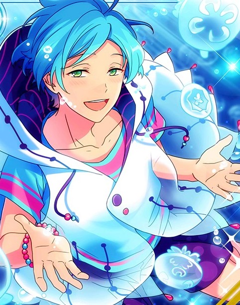
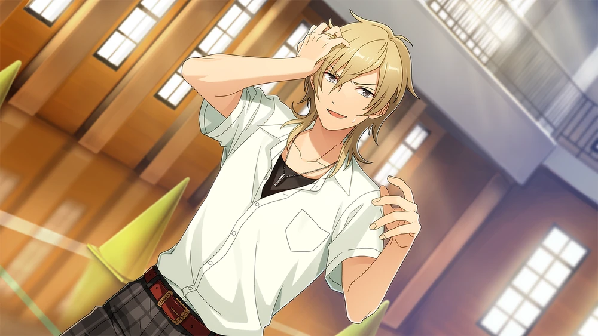
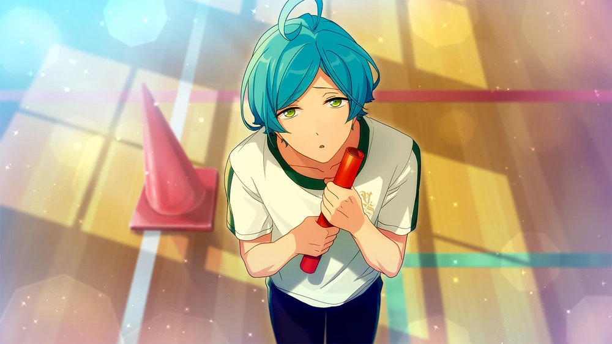

Deep Sea Mystery



Unproofread Translations Terms of Service: This story is not JP proofread. Unproofread translations are under much stricter terms of service, including no screenshots publicly spread. Click for more information
While these translations are as accurate as I can personally make them, I am not comfortable with and do not permit use of the following:
Do not take or publicly circulate screenshots of this translation.
Do not use this translation in analysis threads, story threads, fanworks, quotebots, etc.
I would love to get this story properly proofread one day! If you are a translator interested in JP proofreading this story, feel free to email me or DM me at @citrinesea on Twitter.
Chapter 1

Hah~ Come on, come on.
Class dragged on longer than usual, so I’m falling behind the time we said we'd meet.
I might be able to make it if I start running from here…
… My phone’s ringing? Hm? This number’s…
Going to the trouble of giving me a call— What’s the matter?
Oh, the date today isn’t gonna work?
Mhm... mhm... I see. If your mom’s not feeling well, there’s not much you can do, y'know. So, we’ll just reschedule for another time.
Ah, don’t worry about it. I hope your mom feels better soon. Well, talk to you later.
… Now then. Where should I go from here, huh? I don’t really feel like inviting someone out for a date, so maybe I’ll just head home.
No no, it’d be better to show my face for club activities instead, huh~
I haven’t showed up for a while, so how about I take a li~ttle peeksies ♪

Yoohoo. How’s everyone doing~?
… What business do you have with us, Disgrace of the Marine Life Club?
Oh, a pleasure as always, you~ We’re in the same club, so let’s be a little more friendly with each other, ‘’kay ♪
You’re not going to be very popular with women if you furrow your brows like that, you know~
I have no intention of being friendly with someone who only ever talks about women. Begone with you, Disgrace of the Marine Life Club!
Hahaha. Souma-kyun really, really hates me, huh~ Honestly, it might be a little refreshing to be hated this much ♪
puka, puka… ♪
It is almost time for [field day] you know ♪ plenty of my [friends of the sea] will be participating in [field day]...♪
but, fishies cannot swim [above ground], so it seems i need to [devise] a way for them to do so?
kaoru, souma, you do not have any good ideas, do you...?
Er—rr, before that, just one thing first?
yes, yes, go on ♪
I did catch word about field day, but... Are you really going to participate, Kanata-kun?
yes, i will be~ actually, everyone in class invited me to do so, but...~?
when i asked "could i do it with all my [friends of the sea], too?" there was resistance.
it would definitely be fun, though. it is a lonely thing being misunderstood, hm…?
No no no. When you say “friends from the sea”, you mean releasing all the fish you bred here for field day? That’s impossible no matter how you look at it.
impossible no matter how you look at it…? i would like to participate in [field day] with all my [friends of the sea].
because all of them are my most precious [family]. it is lamentable to be separated from your family, isn’t it…?
Gh… Buchou-dono is in mourning, but I can’t think of anything…!
Buchou-dono is the precious person who showed me the sacredness of the sea. That being the case, it is my duty as a samurai to repay that favor!
And yet, if I can’t think of anything, I must make up for it with my life! With seppuku, I atone!
Okay, that's enough~ The violence of your assumptions are kinda impressive in a way, Souma-kyun.
Not that I’d ever want to follow his example, of course ♪
Chapter 2

You…! Don’t touch my sword with those filthy hands! How do you intend on taking responsibility if it rusts because of you?
… Is your sword really that shabby, Souma-kun?
I mean, carrying a sword is a thing of the past, y’know. Isn’t there that whole Act for Controlling the Possession of Firearms or Swords and Other Such Weapons, anyways~?
You’ve angered me. I won’t allow you to disparage this blade— one bequeathed upon me, one that has been handed down generation-to-generation— as "sha-bee".
I’ll pluck that life right here.
Oop, how dangerous. What are you gonna do if you swing your sword and hit a water tank?
If something were to happen to the water tanks Kanata-kun takes such great care of, he'd be pretty sad, huh?
Gh…! You— Using a water tank as a shield— such a cowardly act is aganist the way of the samurai...!
Well, good thing I'm not a samurai, so~
Anyways, shouldn't we be talking about the sports festival now? It seems like Kanata-kun is thinking of something outrageous in order to participate in it.
You have a fair point...
Well, it’s as you say. I’ll sheathe my sword just for a bit.
Just a bit? I'd like it if you sheathed it for life.
Err, anyways, Kanata-kun? Everyone in class invited you, and you turned them down, right?
So are you participating as a unit? Or as a club?

i am participating as a [club] of course~♪ i am the [head] of the [marine life club] after all.
under the authority of club [head], i thought i would participate alongside my [friends of the sea].
If it's a club activity, then Souma-kun and I have to join in too, huh...? (Sigh) What a pain...
The general student body is gonna be participating in the school festival, so it might be a chance to meet some girls? But when I think about all the preparations we have to do, I lose all motivation.
You dare defy the will of Buchou-dono?
Buchou-dono has said that he hopes to enjoy the school festival with us. Given that, it is our duty as club members to obey his will...!
Mn~mm, looks like Souma-kyun looks up to Kanata-kun like he's a master, but it's a bit much to force that onto me too, right~?
Besides, it seems it's more that Kanata-kun wants to have fun with his "friends of the sea", rather than him looking forward to participating in the festival with us.
my [friends of the sea] are also precious to me, but kaoru and souma are my precious [friends]...♪
so i want to do the sports festival with my [friends]. the ones who love the [sea]~
Buchou-dono…!
I understand.
If you go so far as to say that, this Kanzaki Souma will think hard and thoroughly for ways that you can participate at the school festival with your "friends of the sea"...!
Wait, no matter how hard you think about it, it's just not going to happen. Unless you're thinking of carrying the water tanks yourself.
A water tank is no handicap with the amount of physical strength I have. You've come up with a good idea, against the odds.
Eh? I was just joking... Uwahh, I didn't think you'd take me seriously.
You didn't think I was serious, right Kanata-kun?
i had thought it was a great idea to carry the [water tanks]... how very disappointing...
So you took it seriously too.
Well, look here, it's a miracle enough that we're all going to be participating, so don't give up on participating with your "friends of the sea"
We love the sea too. As long as we have that feeling, it's enough, right? Am I wrong? Kanata-kun? ♪
Chapter 3

... kaoru is right. i was mistaken.... all of my friends of the sea cannot participate, so i am very sad.
with our love for the [sea] in our hearts, let us make the [sports festival] a success...♪
because if our [efforts] are recognized, the [marine life club's] budget will go up [considerably]~♪
So Kanata-kun was thinking about the club in his own Kanata-kun way, huh? That's the Marine Life Club, it has so few members, and our activites are a real mystery too~
If you participated in this club seriously, the Marine Life Club would be recognized as a splendid organization. And yet, you act as if it is someone else's problem...
Allow me to correct that attitude of yours.
Yeah, yeah. Stop with the sword, it's dangerous.
Rather, I feel like you shouldn't be so harsh to me, Souma-kyun~?
If I quit the club, it'll just be the two of you left. It sure would be a shame if the club were to get demoted to an association, right~?
Gh… hgh…!
Ahaha. Looks like someone’s frustrated~ Well, if that's how it is, let's just become better friends, then ♪
I don't have an interest in being buddies with guys, but you must love the sea if you're part of this club, right Souma-kun?
I love the sea too~♪ There’s no bad guy who loves the sea. Really, honestly ♪
everyone who loves the [sea] is a kind person…♪
so i would like for souma and kaoru to get along with each other, okay~?
… It is Buchou-dono’s request. It is more painful than slicing my own flesh, but I will endeavor to get along with Hakaze-dono as best I can.
Now, Buchou-dono. We shall be participating in field day, but what kind of activity do you intend for us to join?
we will be participating in the [club relay race]...♪
Uwaa, a relay all of things? What a pain…?
…
I'll do it, so don't point that sword at me. Still, we're doing a relay race against the other clubs? Can you even run properly, Kanata-kun?
i can run, you know~♪ well, but only as quickly as a [snail].
I’d have been surprised if you had good athleticism, but we're working with "as quickly as a snail"...? How about you, Souma-kun? Are you good at running?
There is not a single morning I miss a morning "jog-gu". These days, Adonisu-dono keeps me company.
I cannot say I can compete with Adonisu-dono, but I would say I am proficient.
Hmhm. Kanata-kun isn't good at running, and Souma-kun is... I feel like I'm somewhat okay at it~? But if we're going to do this, I want us to go for gold.
I suspect Adonisu-dono will also be participating in the club relay race.
I am confident in my own running abilities, but I am no match against him. Winning will be no easy task.
It's not just track and field club, but the other ones'll be there too~ It'll be tough to win, but don't we wanna put up as best of a fight as we can?
... This is the first time you are speaking sense, Hakaze-dono. Still, you are correct. I want to prove that the Marine Life Club will not be taken down by the sports clubs easily!
Yep yep ♪ So, that means we need a coach, right? I wonder if there's a coach around here somewhere to lead the way~?
Oop, Anzu-chan. Don’t turn right back around.
You— You’ve frightened Anzu-dono. Get your hands off her!
Yeah, yeah. Sorry, Anzu-chan. … You forgive me?
That’s Anzu-chan, tender and kind~ Looks like you’re starting to like me ♪
How many times have I asked it, how can you talk to women so loosely like that? Anzu-dono, get behind me. That way I can protect you from Hakaze-dono's evil influence.
You don't need to go that far, I wouldn't put my hands on a woman if she didn't want it. Honest, for real ♪
Well, as I was saying... Will you be our coach Anzu-chan?
You're all of our producer right? Then, you can be our coach.
If you're not confident in yourself, I'll show you how to do it step by step, 'kay~?
Anzu-dono. You do not need to listen to a single lewd word he says. You are our "Purodyuusaa".
So you should carry out your professional responsibilities. This isn't the time to get caught up in our personal affairs.
You want to hear it out a little more...? But, you must be a busy person, Anzu-dono. I would feel sorry if you were to get involved in our affairs.
Anzu-chan's actually going out of her way to show interest, so could you butt out? Thanks.
Let's see, Anzu-chan. This might end up being a long conversation, but... Oh, I see. You've heard a lot up to now, so you know.
We're ending up having to participate in the club-relay race.
Even if winning the whole thing is impossible, we still want to place pretty high, so...? In order to do that, we decided that we needed a coach.
We want to ask you to be that coach, but would you actually be willing to do it? Please, for this...!
Hey, Souma-kun and Kanata-kun, you guys ask too! Maybe if we get on our knees and beg our hearts out, she'll do it for us~?
M--Mnm... Anzu-dono, I am aware we are bothering you, so I feel awkward asking it of you, but please... this is for the Marine Life Club, and for us.
Anzu-dono, would you be willing to be our coach so we can achieve a respectable rank for the club-relay race?
puka, puka ♪ please help me too...♪
since you have gone to the trouble of being our [coach], i would like to give you this [miniature fish tank] i made as thanks~♪
the [seashells] are also handmade, you know~?
large [fish tanks] are nice, but a [fish tank] that can fit in the palm of your hand is cute and charming too ♪
you are happy? i see~ that makes me really happy too ♪
and if that has awoken you to the splendor of the [sea], then that makes me really, really happy...♪
(She totally won over Kanata-kun, huh~? And it looks like difficult Souma-kun really looks to her too.)
(Looks like there's a lot more rivals for Anzu-chan than I thought.)
(Well, the more rivals I have, the more fired up I get, so that's no problem~♪)
anzu-san. thank you for taking on the role as our [coach] ♪
... you will call for an [assistant] tomorrow, so we will have to wait until then?
i understand. well then, please look after us until then~♪
Chapter 4

It's the end of the school day at long last~♪ Getting one-on-one coaching from Anzu-chan makes me happy ♪
You pervert. Lay a hand on Anzu-dono and you will become rust on my sword.
Brandishing your sword again, Souma-kun? How dangerous.
Oop, Kanata-kun. That's not the way to the gym, you know? Honestly... I can't take my eyes off of you for even a second.
it felt like the sea was calling to me, though~?
the weather is perfect right now. and when the weather is perfect, a [soak] feels perfect, doesn't it...♪
It might certainly feel good, but can we save that soak for later?
We asked Anzu-chan to be our coach for the sports festival today, so isn't that what you should be prioritizing?
that is right... if i am not allowed to [soak], then i suppose it cannot be helped~?
Yup, that's right. Ah, look. Isn't that Anzu-chan over there?
He~y, Anzu-chan!
... Hm? Can she not hear me? Well, that's definitely Anzu-chan over there. No doubt.
Okay, Souma-kun. I'm headed over first, so look after Kanata-kun, 'kay~?
Ah, hold it! You—! Just what are you planning to do with Anzu-dono…!?
Kh… I would love to chase after him, but I cannot just leave Buchou-dono behind...!
puka, puka ♪ don't rush or hurry, just take it easy and relax ♪

You're a quick one, Anzu-chan. But, now I’ve finally got you where I…
Ah, Hakaze-senpai. I'm looking forward to working with you today.
Uu~um, what are you doing with Anzu-chan?
Huh? She didn't tell you?
Anzu-san asked me to help coach you guys since you all were gonna do the club relay race.
Now that you mention it, I feel like she did say something about calling for a helper… Errr… You, you’re one of the twins, huh~ What’s your name again?
I’m Aoi Yuuta.
Right, right, Yuuta-kun, huh. Well, I might forget that the next time we meet. I mean, what's the point in remembering the names of guys, am I right~?
Uh, sure...
Anzu-san, is this really going to be okay? Or maybe I should ask, why did you agree to be their coach in the first place...? Huh? You were enticed by a miniature fish tank?
Ahaha. So you like those kinds of things too, huh, Anzu-san? I used to collect miniature toys forever ago, you know. How nostalgic.
Wanna come by my house sometime, Anzu-san? I'm sure I've got all those toys buried in my closet somewhere...
I'll ask Aniki about it later ♪
Hold it right there, pal~? You're asking out Anzu-chan right in front of me?
I've got my sights set on nurturing her. Don't get in the way of my plans, 'kay~?
Anzu-san, you should really get away from Hakaze-senpai, you know...? It seems like he's taken quite a liking to you.
I've never seen Hakaze-senpai this serious about a woman before…
Hey now. Don't go making Anzu-chan more wary of me.
She's finally started talking to me more lately. If she starts avoiding me again, I'm gonna blame you, Yuuta-kun.
S-Sorry. … Well, I mean, how much does she hate you for her to avoid you so much...?

Anzu-dono! Are you alright…!?
Wah, some guy just lunged while wielding a sword!? Wawah, I’m done for~!!
Mnm. My apologies. I lost my temper, and I should certainly know better. The color of that hairpin… Are you Aoi?
Well, my older brother’s an Aoi too. I’m the younger twin, Yuuta.
(Sigh) … Still, you really surprised me. You have a really threatening aura about you, so I really thought I was gonna die...
I thought Hakaze-dono might have been threatening Anzu-dono with his wicked intentions. In my panic, I drew my sword.
Oh, well, if that's the case, don't worry, then~ I was with Anzu-san.
I am relieved to hear that. If anything were to happen to Anzu-dono, I would have to atone with seppuku.
I don't force myself on uninterested women, though~
It's true, honest! ♪

because kaoru is such a good boy, isn't he…♪ and because he is a good boy, even the fish love him too…♪ there there... (Petting him)
Um, I’d love it if you didn't pet my head, though... Honestly, being with you always throws me off...
So anyways, it looks like this is everyone! I have to turn up for light music club practice, so we'll have to make good use of our time today.
I won't hold back in my coaching, so prepare yourselves, 'kay~? Now then, why don't we start with practicing passing the baton?
Baton-passing? Do we really need to practice something like that~?
The people who ask that are usually the ones who mess things up during the actual event.
If you mess up the pass or drop the baton, you can completely lose your lead... That's what usually happens, anyways.
And even if you don't drop it, you can end up losing time if the pass isn't smooth.
Just having a smooth baton pass alone can cut your time by a ton.
So you're saying that even if we can't get faster with running, we might have a real chance if we practice baton-passing.
Well, that might actually be the right approach for us.
There are some tips on running form we can use to our advantage… We'll go over stuff like that after. I'll explain them then.
First, let's see if you can even pass the baton properly~ ☆
Chapter 5

Are you watching, Anzu-chan~? I'll be running for you, so I'd love if you kept your eyes on me, 'kay? ♪
Mhmhm, I know. This is just practice.
But, I'm not gonna half-ass practice. I wouldn't want to look uncool in front of you, after all~
You're always only talking to Anzu-dono. How can we entrust you with the baton if you won't even run?
Yeah, yeah, I got it. ... Alrighty, I've warmed up enough I think.
Heh. Hakaze-senpai's pretty quick, huh?
His form is nice too. He'd honestly seem right at home in one of the sports clubs. I wonder why he joined the Marine Life Club...?
Hakaze-dono is the disgrace of the Marine Life Club, you know. There has not been a single time I have acknowledged him as a member.
You really, really dislike him, huh? There was a good length of time Anzu-san was wary of Hakaze-senpai too, right?
Well, Hakaze-senpai is pretty half-assed about everything, so maybe he just doesn't get along with serious people.
Still... that same Hakaze-senpai is taking part in the relay race. And he even showed up to practice today… That's a little astounding.

Alrighty, Kanata-kun. Here's the baton.
puka, puka... ♪ thank you very much, kaoru ♪
Wait, you're not supposed to thank me and bow your head. See here, you have to take the baton fast, like this. And then you run.

doing so many things at once is quite confusing, isn't it...? umm, so i take the [baton] and run...?
Mhmhm. You just gotta keep running. You see how Souma-kun's over there? You're gonna run all the way to him, and pass him the baton. Alrighty, off you go!
puka, puka... ♪ running is fun, isn't it? but swimming in the fountain is far, far more fun...♪
i really wish to swim in the [ocean] though. but i cannot swim. i would just sink to the bottom of it.
it would be nice if i could swim even on [land], wouldn't it...? i would truly be happy with all of my [friends of the sea]...♪
ah. that reminds me. it should be [feeding] time soon. everyone must be so hungry...
and if they are hungry, won't they be sad? it is a sad feeling when you have nothing in your tummy...
Hm? What is it, Buchou-dono? Why are you going towards the gymnasium exit?
… Buchou-dono? Buchou-dono…!
This is bad. It seems that he cannot hear my voice. Can someone go stop Buchou-dono…!?
Whoa there, Shinkai-senpai. You're not allowed to go off course, you know?
please do not stop me~ i need to feed my [friends of the sea]. everyone must be so very hungry...
Please rest easy, Buchou-dono. I am in charge of their feeding, so I would never allow them to be sad and hungry.
is that so...~? it relieves me to hear that ♪ thank you, souma ♪
so then, ummm... ahh, that is right. i completely forgot, i was supposed to run and give souma the [baton]....
but, this worked out perfectly ♪ alright, souma, here is your [baton] ♪
I have received Buchou-dono's feelings loud and clear. I shall now carry them to the goal!
Stop, stop!!
You're out of bounds. You're gonna get a foul if you pass the baton and start running from here~?
Mnmn. So there are rules like that... Relays races are quite complex, are they not?
... Anzu-san. I'm starting to worry whether these guys are gonna be okay...
The fact Hakaze-senpai seems like the normal one of the bunch is a bad sign on its own, isn't it…?
Excuse you~? I'm a pretty sensible guy. I'd appreciate it if you didn't lump me in with those guys.
Well, why did you even join the Marine Life Club?
Well I picked it because I like the ocean, duh. And it seemed like a club where I could slack off.
What a thin reason.... Anyways, getting you guys to finish the race is going to be a real tough ask at this rate.
Teamwork is super key for relay races, after all. If your teamwork is shoddy, there's nothing I can do to help with that.
Hmm. How does one establish "chee-mu" work...?
Mm~nn, maybe if you work hard and aim for the same goal? Putting your energy towards the race could help you foster teamwork.
But I didn't think you guys wouldn't even be able to pass the baton to each other. Mm~nn, what should we do now...?
Well, why don't we just keep practicing and see how it turns out? What happened just now was an anomoly, so...
We shouldn't just make a call on it now, right...?
puka, puka...♪ i will do my best to pass the baton to souma on this next attempt ♪
Ahaha. Kanata-kun's fired up, hm~♪ Well, make sure not to get too fired up that you spin your wheels.
You... Do you mock Buchou-dono's spirit?
Oop, scary, scary.
Or should I say, Souma-kun. Running with that sword of yours on you is too dangerous, isn't it? Don't you think so too, Anzu-chan?
... Mnph. Such a cowardly move to recruit Anzu-dono to your cause, you!
B-But, this blade has been passed down from generation to generation in my family. I am under strict order by my parents to keep it by my side at all times.
I beg of you, Anzu-dono! To take this blade from me...! Just this once, please, I beg of you!
Uwaa, he's really on the ground bowing. I can tell you're desperate, but you're the one putting Anzu-chan in a tough spot here?
B-But…!
Anzu-dono, you'll look after it?
... No one other than Anzu-dono, then. If it's Anzu-dono, I would be willing to pass over this blade.
The blade is extremely sharp. I humbly request you never draw it from its sheath.
Now then, why don't we give it another go~
We're gonna be here all day, so don't go home early, 'kay, Anzu-chan? Otherwise you'll cut our motivation by half.
i too would be happy for anzu-san to stay with us~♪
i will do my very best. please watch us to the very end, anzu-san...♪